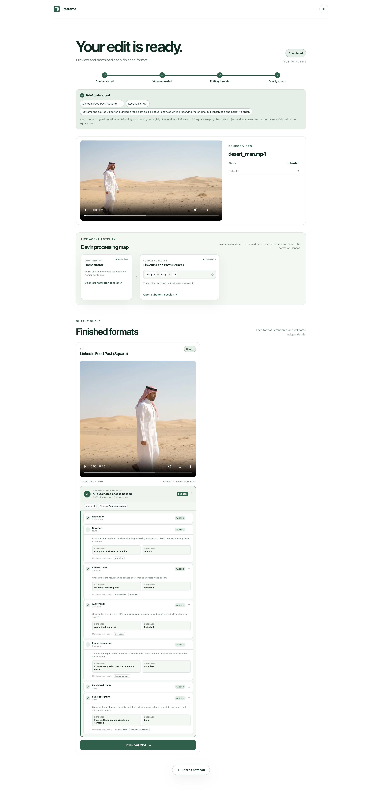

AI video / Full stack
Reframe
A 24-hour hackathon build that turns one video into validated, platform-ready crops without padding, letterboxing or losing the subject.
- Role
- Video pipeline · orchestration · UI
- Timeline
- 22-23 Aug 2026 (24 hours)
- Team
- Three-person hackathon team
- Status
- Working MVP

One finished video rarely fits every platform.
A horizontal interview may need to become a square feed post and a vertical reel. Simply cutting the centre loses faces; fitting the whole frame creates bars or blurred padding. Reframe accepts a video and a plain-language brief, then produces full-bleed outputs for each requested format while following the main subject.
We built it during the European Hackathon League event at TUM. The goal was not a slide deck: by the end of the 24 hours, uploads, processing, previews and downloads had to work together.
The pipeline treats every format as a separate job.
The backend analyses the prompt, stores the upload and starts each requested format independently. A square output can finish even if a vertical one needs another attempt. The frontend receives job updates, shows the source and exposes every playable result together with its validation status.
React and Vite power the interface, Fastify owns the job API, and shared Zod schemas keep status and output contracts consistent. FFmpeg and ffprobe do the media work.
I worked across the pipeline, orchestration and interface.
I integrated the Devin backend orchestration and its local fallback, then worked on the parts that make a crop remain useful over time: tracking guidance, shot-boundary detection and keeping the primary subject stable across cuts and short detection gaps.
I also added AI-directed shortening, the audience-review loop, the first multi-clip editor prototype and several performance and interface improvements. Moving between those layers helped me catch handoff problems that were invisible when each component was tested alone.
“The file rendered” was not the acceptance condition.
Every candidate is checked for the requested resolution and aspect ratio, a playable video and audio stream, duration, black frames, artificial borders, subject loss and unsafe face framing. A visibly bad crop carries its specific objection into the next attempt instead of starting over without context.
The loop is bounded at three attempts per format. If a candidate still has open objections, Reframe delivers the final playable version as unvalidated and lists the issues rather than hiding the output or retrying forever.
The agents had narrow jobs and typed handoffs.
One orchestrator manages the request, an optional director plans shortening, and one child session works on each output profile. Shared contracts define what each stage may return. The sessions can propose tracking guidance and review a rendered candidate, but the pipeline keeps file paths, rendering, validation rules and retry limits under deterministic control.
That division mattered under hackathon pressure: we could change one part without silently changing the meaning of a completed job elsewhere.
We left with a reproducible demo, not a production service.
The MVP processed landscape and portrait inputs end to end and returned both horizontal and vertical outputs. It also included generated video fixtures and tests for contracts, the API, the interface and the crop-and-validation pipeline.
It still used local job storage and hackathon-grade deployment. The useful result was proving that agent judgment and deterministic media checks could share one bounded pipeline without either pretending to replace the other.